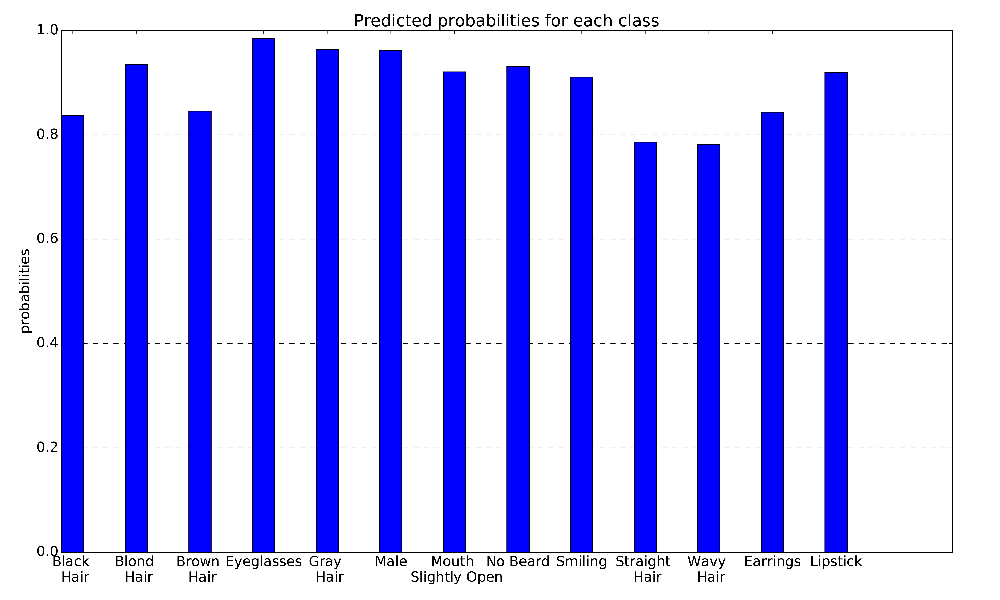

The task to give RoboFace his understanding of the world through the webcam he uses to perceive, belongs to the problems that computer vision tries to solve. The algorithm of our choice is a convolutional neural network (CNN), since neural networks are the state of the art today in computer vision.
Our implementation is a supervised learning algorithm, since we feed in labels (groundtruth) for every training image. We define a loss function that minimises the distance between the prediction and the true label. In this way, we learn the actual representation of the training data and can apply it to our test images and on RoboFace.
A neural network is composed of linear functions called neurons, followed by a nonlinear
transformation. We can not only have many neurons per layer, but also stack layers
consecutively. This results in a much better and faster training, since the minimum of
the non-convex function we want to minimise in training is a better one , so closer to the
global optimum we can not find. But interesting is, that it was mathematically proven,
that a single hidden layer (so a neural network containing input, output and one middle
layer) of finite number of neurons, is enough for approximating any continous function.
For more details, see the universal approximation theorem.
% image of a hidden layer TODO
The architecture defines how this neurons are stacked in layers. A widely used layer in vision solving algorithms is one implementing convolutions. This is inspired by the human vision system, that also bundles a region of photosensitive cells and combine their signal into one neuron that send his own output to be processed further.
We take more of this convolutional layers and stack them together, to generate a so called deep neural network. The deepness shows its effectiveness in maximising the field of view of the network. Since a single convolution has for example the size 9 x 9, one layer can see only this much context. But stacking a next convolutional layer, the output of the previous 9 x 9 is considered again in 7 x 7 window for example, grows the field of view of the second layer considerably.
In the architecture we implemented, there is a Max Pooling Layer following every convolution step. This layer is actually downscaling the image to the half, in order to reduce the number of parameters and avoid redundancy of information.
The activations representing the nonlinearity is the ReLU (rectified linear unit) which penalises for wrong answers of each neuron during training.
% image of a ReLU TODO
The dropout layers in our architecture shut down randomly 25% and 50% of the neurons in order to make a better generalising neural network, since the neurons do not get the chance to learn the data by heart and over-fit.
The dense layer is connecting every neuron in the previous one with the ones in the current layer. Hence it contains more parameters than the convolutional ones, where the weights are vastly shared. We can interpret the role of the dense layers as the classification step in the network, whereas the convolutions did the feature extraction. So it is sensible to choose the number of neurons in the last layer as the amount of classes we want to predict, which is 13 in our case.
The last activation function in the network penalises for wrong classification. We use the binary crossentropy and not the categorical one, since the classes are not mutually dependent. We can have a male with straight hair, this attributes do not exclude each other. There are some which do, like straight and wavy hair, but firstly, a good trained network should not predict both at the same time, since it learned to distinguish one from another. Secondly, this can be avoided in a postprocessing step, at prediction time.
For training a neural network that generalises as much as possible, we take the big CelebA dataset, which is freely available at http://mmlab.ie.cuhk.edu.hk/projects/CelebA.html. It contains 202.599 images of 10.177 celebrities annotated with 40 attributes per image.
From this attributes, we take 13 that are based only of the face region (so not taking the neck, shoulders or head top into account) and those where we think RoboFace could make something of. These are:
The neural network implementation is done with the keras module using the TensorFlow backend. For training the neural network, we make use of the parallelising capacity of the GPU, which results into a training time of 2 seconds per 1024 images. CPU training is obviously much slower. The optimiser for finding a good local optimum of the loss function is the Adadelta optimiser from keras, which stands out for his adaptive learning rate and faster convergence than normal stochastic gradient descent SGD. The overall 125.709 parameters are found in this way.
A wrong way to train the neural network is to feed in the CelebA images from the dataset exactly as they are. Even though the training curve looks very fine, since we achieve a low loss value and a high accuracy on the training set and on the test set, the neural network over-fits the CelebA dataset and does not generalise at all on real world images as taken from RoboFace. He completely fails by saying that in the following image, there is a male with no beard with probabilities around 90%.
The right way to do it, is by normalising the training and the test set, as well as the images
taken by RoboFace. This is done in neural_network_training/normalisation.py
the following steps:
Now, the loss-accuracy curve looks as well as before, but the generalisation capabilities are vastly enhanced.
In the plot showing the accuracy per each class, we see as expected, that wavy and straight hair are comparably not distinguished that well. This comes form the fact, that the normalisation step crops out most of the region that does not contain the face, so a lot of hair information gets lost. The eyeglasses class, which is in the center of the face image, gets the best accuracy.
In the following are some examples of the neural network predicting on images taken by RoboFace.
Hardware improvements...